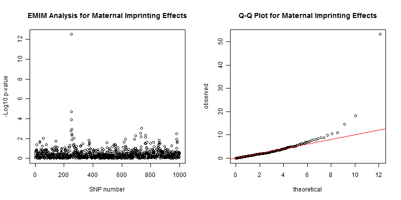
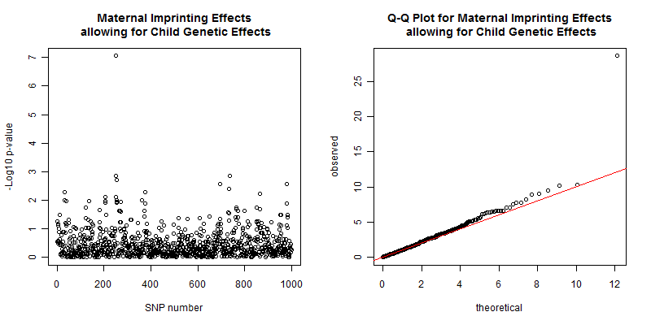

9 Parent-of-origin effects with SHAPEIT2
Please download the latest version of PREMIM if you have been running parent-of-origin analysis using SHAPEIT2 (version < 3.2) for important updates. These regard the combination of phased and non-phased data and do not affect data with only case/parent trios and case/duos.
Parent-of-origin (or imprinting) effects relate to the situation where traits are influenced by the allele inherited from only one parent, with the allele from the other parent giving no effect. In most case/parent trio genotype combinations, the parent-of-origin can be deduced unambiguously, allowing investigation of such effects. However, when all three people are heterozygous, parent-of-origin cannot be determined. Existing methods operate on a SNP-by-SNP basis and either perform some sort of “averaging” or discard these ambiguous cases. If the correct parent-of-origin at a SNP could be determined then this would provide extra information and increase the power to detect imprinting effects.
We have extended PREMIM/EMIM to make use of haplotype estimation in case/parent trios and duos, using surrounding SNP information for each SNP across the genome, as a means of estimating the parent-of-origin of alleles. PREMIM incorporates haplotype estimation performed by SHAPEIT2, see Delaneau et al. (2012) and Delaneau et al. (2013). SHAPEIT2 can be downloaded from the SHAPEIT website.
You can use PREMIM and EMIM with SHAPEIT2 by running PREMIM with the -ihap option and using the -shapeit option to indicate the command (with full pathname if required) on your system to run SHAPEIT2.
./premim -a -ihap -shapeit ./shapeit2 mydata.bed
./emim
See Howey et al. (2015) for a more in-depth account of the methodology.
The additional options for using PREMIM with SHAPEIT2 to estimate the parent-of-origin of alleles are summarised below:
| Option | Description |
|---|
| -ihap | estimate haplotypes for improved modelling of imprinting (not permitted with the -xa option) |
| -ihap-noadj | do not adjust estimated duo cell counts |
| -ihap-miss-thres h | maximum missing data threshold, h, for trios and duos (default h=0.5) |
| -shapeit com | shapeit command with full path if required (default com=“shapeit2”) |
| -shapeit-thread t | shapeit thread option: --thread t (default t=12) |
| -shapeit-mcmc-ops b p m | shapeit MCMC options: --burn b --prune p --main m (default b=7, p=8, m=20) |
| -shapeit-model-ops s w | shapeit model options: --states s --window w (defualt s=100, w=2) |
| -shapeit-ops “options” | other shapeit options, use “” to surround options |
Various options can be set when SHAPEIT2 estimates the haplotypes via PREMIM, it is recommended to keep the default settings unless you have specific reason to change them for your particular analysis. If more than 12 processors are available then it would beneficial to increase the number of threads to speed up haplotype estimation. The -shapeit-ops option allows any parameters to be set with SHAPEIT2 to estimate the haplotypes, for example to use a reference panel and 15 threads:
./premim -a -ihap -shapeit ./shapeit2 -shapeit-thread 15 -shapeit-ops "--input-ref ref.haplotypes.gz ref.legend.gz ref.sample" mydata.bed
./emim
The input data files for using EMIM with estimated parent-of-origin alleles for case/parent trios, case/mother duos and case/father duos are different from the usual EMIM input files. The case/parent trios have 4 extra columns and look something like the following:
snp cellcount 1-15 (+2 phased, +2 totals)
1 21 38 41 34 38 78 73 73 0 68 147 146 149 147 281 88 78 0 1500
2 51 85 75 71 76 88 84 91 0 94 120 115 105 102 138 89 116 0 1500
3 18 39 38 44 39 69 68 79 0 81 148 161 134 156 253 88 85 0 1500
4 1 16 14 20 14 48 47 59 0 66 160 182 151 163 448 55 56 0 1500
5 1 7 7 9 6 38 33 41 0 47 151 170 147 163 597 43 40 0 1500
6 1 4 3 3 3 26 24 31 0 35 141 156 137 150 726 29 31 0 1500
7 0 1 3 2 1 14 17 15 0 22 119 131 115 126 898 15 21 0 1500
8 0 1 1 1 1 3 10 4 0 8 98 110 91 99 1058 8 7 0 1500
...
The first 16 columns are the same as before, see section 5.3 for details. The last 4 columns are:
-
9a cell count - the estimated number of genotypes with the risk allele inherited from the father in the ambiguous scenario of all heterogenous individuals.
-
9b cell count - the estimated number of genotypes with the risk allele inherited from the mother in the ambiguous scenario of all heterogenous individuals.
-
The total number of case/parent trios not phased.
-
The total number of case/parent trios phased.
Note that since, when using PREMIM and SHAPEIT2 to create these files, all case/parent trios are phased, cell 9 is always 0. In principle, for analysis in EMIM, one can combine data sets where phasing has/has not been performed. In that situation, cell 9 would not necessarily be equal to 0.
The case/mother duos also have 4 extra columns and will look something like the following:
snp cellcount 1-7 (+2 phased, +2 totals)
1 43 133 127 0 219 225 428 100.1 224.9 0 1500
2 128 188 201 0 209 206 246 158.805 163.195 0 1500
3 62 134 137 0 222 231 400 112.655 201.345 0 1500
4 15 76 84 0 191 212 647 70.8306 204.169 0 1500
5 7 46 58 0 174 204 771 40.6535 199.346 0 1500
6 5 30 37 0 154 175 904 28.2062 166.794 0 1500
7 3 24 16 0 120 148 1032 17.1744 139.826 0 1500
8 2 11 7 0 83 105 1181 8.23184 102.768 0 1500
9 57 128 125 0 189 209 461 120.105 210.895 0 1500
...
Similarly, the case/father duos also have 4 extra columns and will look something like the following:
snp cellcount 1-7 (+2 phased, +2 totals)
1 55 113 128 0 213 230 420 226.766 114.234 0 1500
2 131 166 157 0 216 227 253 191.468 158.532 0 1500
3 67 116 119 0 214 226 439 211.791 107.209 0 1500
4 19 69 76 0 198 196 653 215.963 73.0372 0 1500
5 7 47 61 0 172 182 774 202.364 54.6364 0 1500
6 4 31 39 0 155 170 887 178.309 35.6908 0 1500
7 1 15 26 0 119 139 1025 158.154 16.8459 0 1500
8 0 7 11 0 92 97 1174 110.437 8.56334 0 1500
9 60 120 101 0 198 252 415 238.776 115.224 0 1500
...
The first 8 columns for case/mother duos and case/father duos are the same as before, see section 5.5 and section 5.6 respectively for details. The last 4 columns are:
-
4a cell count - the estimated number of genotypes with the risk allele inherited from the father in the ambiguous scenario of both heterogenous individuals.
-
4b cell count - the estimated number of genotypes with the risk allele inherited from the mother in the ambiguous scenario of both heterogenous individuals.
-
The total number of duos not phased.
-
The total number of duos phased.
Note that the estimates for the duos are not integers as the estimated cell counts are adjusted by PREMIM to avoid potential type I error problems, see Howey et al. (2015) for more details.
It is necessary to tell EMIM that it will be analysing this extended data and the start of the EMIM parameter file, emimparams.dat, should be something as follows:
-----------INPUT DATAFILES------------------------------------------------
2 << caseparenttrios.dat file (0=no, 1=yes, 2=yes, using haplotype estimates)
0 << caseparents.dat file (0=no, 1=yes)
2 << casemotherduos.dat file (0=no, 1=yes, 2=yes, using haplotype estimates)
2 << casefatherduos.dat file (0=no, 1=yes, 2=yes, using haplotype estimates)
0 << casemothers.dat file (0=no, 1=yes)
...
The parameter file is automatically produced as such by PREMIM if SHAPEIT2 is used.
It is possible to combine two EMIM data files simply by adding the cell counts together. This could be done for one data set that has been phased and another that has not been phased. If this is done then it is also necessary to update the 2 total columns. Obviously, the list of SNPs in each of the two files must match.
The following R code demonstrates how some unphased data in the old EMIM format could be combined with some phased data in the new EMIM format:
## Read in unphased case/parent trios and skip header
caseparenttrios.unphased<-read.table("unphased-data/caseparenttrios.dat", skip=1)
## Convert data to the new EMIM format
cell9a<-rep(0, length(caseparenttrios.unphased[,1]))
cell9b<-rep(0, length(caseparenttrios.unphased[,1]))
total.unphased<-rowSums(caseparenttrios.unphased[,2:16])
total.phased<-rep(0, length(caseparenttrios.unphased[,1]))
## Put unphased data into the new format
caseparenttrios.newformat<-cbind(caseparenttrios.unphased, cell9a, cell9b, total.unphased, total.phased)
## Read in phased case/parent trios and skip header
caseparenttrios.phased<-read.table("phased-data/caseparenttrios.dat", skip=1)
## Check data is the same size
dim(caseparenttrios.phased)
dim(caseparenttrios.newformat)
## Combine the data
combined.data<-caseparenttrios.newformat + caseparenttrios.phased
## Set snp number correctly
combined.data[,1]<-1:length(combined.data[,1])
## Write new combined data, the header is not important except there must be one
write.table(combined.data, "combined-data/caseparenttrios.dat", row.names=FALSE, col.names=TRUE, quote=FALSE)
For example, the unphased case/parent trios data may look as follows:
snp cellcount 1-15
1 4 10 17 9 13 6 4 14 44 26 25 17 24 12 19
2 1 0 8 0 5 2 3 2 23 21 29 38 26 43 52
3 0 0 0 0 0 0 0 0 0 1 1 0 1 0 319
4 0 0 3 0 0 2 4 1 13 24 22 40 8 25 131
5 0 0 5 3 6 4 7 2 23 23 29 44 19 46 59
6 0 0 1 2 0 0 2 2 4 8 14 18 21 26 197
7 0 0 3 0 0 1 0 1 11 18 14 37 12 29 160
8 1 3 9 5 12 9 8 12 31 30 28 26 31 20 20
...
and the phased case/parent trios data as follows:
snp cellcount 1-15 (+2 phased, +2 totals)
1 9 20 27 20 18 37 36 35 0 30 70 64 65 75 121 38 35 0 700
2 28 40 29 33 36 39 44 39 0 45 49 47 60 36 62 58 55 0 700
3 14 17 14 17 18 38 41 40 0 47 65 62 69 54 116 49 39 0 700
4 6 5 7 4 9 24 28 25 0 24 63 82 82 78 210 32 21 0 700
5 3 5 2 4 5 21 21 14 0 19 57 82 79 70 282 19 17 0 700
6 2 0 1 2 2 15 20 10 0 14 56 68 70 63 351 16 10 0 700
7 1 1 0 0 2 10 9 4 0 10 47 57 60 55 428 6 10 0 700
8 0 2 0 0 1 2 5 1 0 8 33 44 43 39 511 4 7 0 700
...
resulting in combined case/parent trios data:
V1 V2 V3 V4 V5 V6 V7 V8 V9 V10 V11 V12 V13 V14 V15 V16 cell9a cell9b total.unphased total.phased
1 13 30 44 29 31 43 40 49 44 56 95 81 89 87 140 38 35 244 700
2 29 40 37 33 41 41 47 41 23 66 78 85 86 79 114 58 55 253 700
3 14 17 14 17 18 38 41 40 0 48 66 62 70 54 435 49 39 322 700
4 6 5 10 4 9 26 32 26 13 48 85 122 90 103 341 32 21 273 700
5 3 5 7 7 11 25 28 16 23 42 86 126 98 116 341 19 17 270 700
6 2 0 2 4 2 15 22 12 4 22 70 86 91 89 548 16 10 295 700
7 1 1 3 0 2 11 9 5 11 28 61 94 72 84 588 6 10 286 700
8 1 5 9 5 13 11 13 13 31 38 61 70 74 59 531 4 7 245 700
...
Do not worry about the weird header, this can be anything, but there must be a header as EMIM expects one (which it will ignore!).
Similarly, the case/mother duos can be combined using the following R code:
## Read in unphased case/mother duos and skip header
casemotherduos.unphased<-read.table("unphased-data/casemotherduos.dat", skip=1)
## Convert data to the new EMIM format
cell4a<-rep(0, length(casemotherduos.unphased[,1]))
cell4b<-rep(0, length(casemotherduos.unphased[,1]))
total.unphased<-rowSums(casemotherduos.unphased[,2:8])
total.phased<-rep(0, length(casemotherduos.unphased[,1]))
## Put unphased data into the new format
casemotherduos.newformat<-cbind(casemotherduos.unphased, cell4a, cell4b, total.unphased, total.phased)
## Read in phased case/mother duos and skip header
casemotherduos.phased<-read.table("phased-data/casemotherduos.dat", skip=1)
casemotherduos.phased<-casemotherduos.phased[1:8,]
## Check data is the same size
dim(casemotherduos.phased)
dim(casemotherduos.newformat)
## Combine the data
combined.data<-casemotherduos.newformat + casemotherduos.phased
## Set snp number correctly
combined.data[,1]<-1:length(combined.data[,1])
## Write new combined data, the header is not important except there must be one
write.table(combined.data, "combined-data/casemotherduos.dat", row.names=FALSE, col.names=TRUE, quote=FALSE)
Similarly, for the case/father duos data. All other data files are all formatted in the old EMIM format and can be combined without any conversion.
This section demonstrates the use of PREMIM/EMIM with SHAPEIT2 to estimate the parent-of-origin of alleles through the use of an example. Data for this analysis uses simulated data with 700 case/parent trios, 500 case/maother duos, 250 case/father duos and 50 cases with 1000 SNPs. A causal SNP was set at SNP number 250 and the SNPs had a 3 percent missing data rate. The data can be downloaded here.
Firstly ensure that you have a working version of SHAPEIT2 installed, currently only available for LINUX, and can be downloaded from here.
The following PREMIM command uses the -ihap option to estimate the parent-of-origin of alleles with the local SHAPEIT2 command set with the -shapeit option, and -a to estimate risk allele frequencies and -im to set the EMIM parameter file to analysis maternal imprinting effects.
./premim -a -im -ihap -shapeit /home/me/myprogs/shapeit2 demo-poo-data.bed
The output should appear something like the following:
PREMIM: Pedigree file processing program for EMIM, v3.12
--------------------------------------------------------
Copyright 2011-2015 Richard Howey, GNU General Public License, v3
Institute of Genetic Medicine, Newcastle University
Log file: premim.log
Input file: demo-poo-data.bed
Maternal imprinting analysis set for parameter file (emimparams.dat).
Estimating allele frequencies and writing to file (emimmarkers.dat).
Estimating parent-of-origin with SHAPEIT2.
SHAPEIT2 command: /home/me/myprogs/shapeit2
Maximum missing data permitted for trios and duos: 0.5
Calculating haplotype graph using SHAPEIT command:
/home/me/myprogs/shapeit2 --input-bed tempForSHAPEIT.bed tempForSHAPEIT.bim tempForSHAPEIT.fam --output-graph tempOutSHAPEIT.hgraph
--output-log tempOutSHAPEIT-hgraph.log --thread 12 --burn 7 --prune 8 --main 20 --states 100 --window 2 >/dev/null 2>&1
Calculating haplotype estimates using SHAPEIT command:
/home/me/myprogs/shapeit2 -convert --input-graph tempOutSHAPEIT.hgraph --output-max tempOutSHAPEIT.haps tempOutSHAPEIT.sample
--output-log tempOutSHAPEIT-max.log --thread 12 >/dev/null 2>&1
Case/mother duo adjustment parameters:
beta0 = 0.00753525
beta1 = -0.129427
beta2 = 0.560096
beta3 = -0.755696
Case/father duo adjustment parameters:
beta0 = -0.010869
beta1 = 0.183147
beta2 = -0.772304
beta3 = 0.986696
Number of subjects: 3650
Males: 2450 (67.1233%)
Females: 1200 (32.8767%)
Unknown sex: 0 (0%)
Affected: 1500 (41.0959%)
Unaffected: 2150 (58.9041%)
Number of SNPs: 1000
Number of pedigrees: 1500
Mean pedigree size: 2.43333
Standard deviation of pedigree size: 0.558955
File name: emimmarkers.dat
Number of allele SNP frequencies estimated: 1000
File name: caseparenttrios
Number of counted case parent trios (all SNPs): 700000
Average number of counted case parent trios (per SNP): 700
Number of uncounted (Mendelian error) case parent trios: 0
File name: casemotherduos
Number of counted case mother duos (all SNPs): 500000
Average number of counted case mother duos (per SNP): 500
Number of uncounted (Mendelian error) case mother duos: 0
File name: casefatherduos
Number of counted case father duos (all SNPs): 250000
Average number of counted case father duos (per SNP): 250
Number of uncounted (Mendelian error) case father duos: 0
File name: cases
Number of counted cases (all SNPs): 48465
Average number of counted cases (per SNP): 48.465
File name: caseparents
Number of counted case parents (all SNPs): 0
Average number of counted case parents (per SNP): 0
Number of uncounted (Mendelian error) case parents: 0
File name: casemothers
Number of counted case mothers (all SNPs): 0
Average number of counted case mothers (per SNP): 0
File name: casefathers
Number of counted case fathers (all SNPs): 0
Average number of counted case fathers (per SNP): 0
File name: conparents
Number of counted control parents (all SNPs): 0
Average number of counted control parents (per SNP): 0
Number of uncounted (Mendelian error) control parents: 0
File name: conmotherduos
Number of counted control mother duos (all SNPs): 0
Average number of counted control mother duos (per SNP): 0
Number of uncounted (Mendelian error) control mother duos: 0
File name: confatherduos
Number of counted control father duos (all SNPs): 0
Average number of counted control father duos (per SNP): 0
Number of uncounted (Mendelian error) control father duos: 0
File name: cons
Number of counted controls (all SNPs): 0
Average number of counted controls (per SNP): 0
Number of uncounted groups: 1535
Run time: 6 minutes and 11 seconds
This output should also be recorded in the premim.log file.
Importantly, in the example above, the default --thread 12 option for SHAPEIT2 was used to speed up the computation by running the analysis in parallel. This analysis took about 9 minutes on my computer, without the thread option you could expect it to take over 90 minutes! If more processes are available you can set this using the PREMIM option -shapeit-thread 15 say.
The >/dev/null 2>&1bit shown in the output is to stop the screen output of SHAPEIT2.
There are a number of files, tempOutSHAPEIT*, that are created and used during the estimation process and should have been automatically removed. For this reason you should not set off more than one job running at a time in the same directory
The case/mother duos and case/father duos are adjusted separately and the regression parameters are expected to be zero if no adjustment were necessary. In this case the parameters are not near zero, indicating that an adjustment was necessary. Performing an adjustment is default since this does not reduce power but does reduce type I error.
There are no missing case/parent trios or duos in the PREMIM summary data since SHAPEIT2 can impute missing data and a normal background missing data rate is not a problem. There are, however, some missing cases as with older versions of PREMIM.
The next step is to check that the EMIM parameter file is set for the desired analysis. The parameter file emimparams.dat should appear as follows:
-----------INPUT DATAFILES------------------------------------------------
2 << caseparenttrios.dat file (0=no, 1=yes, 2=yes, using haplotype estimates)
0 << caseparents.dat file (0=no, 1=yes)
2 << casemotherduos.dat file (0=no, 1=yes, 2=yes, using haplotype estimates)
2 << casefatherduos.dat file (0=no, 1=yes, 2=yes, using haplotype estimates)
0 << casemothers.dat file (0=no, 1=yes)
0 << casefathers.dat file (0=no, 1=yes)
1 << cases.dat file (0=no, 1=yes)
0 << conparents.dat file (0=no, 1=yes)
0 << conmotherduos.dat file (0=no, 1=yes)
0 << confatherduos.dat file (0=no, 1=yes)
0 << cons.dat file (0=no, 1=yes)
1000 << no of SNPs in each file
------------------PARAMETER RESTRICTIONS----------------------------------
0 << fix allele freq A (0=no, 1=yes)
1 << assume HWE and random mating (0=no=estimate 6 mu parameters, 1=yes)
0 << assume parental allelic exchangeability (0=no, 1=yes)
0 << use CPG likelihood (9 mu parameters)
0 << estimate R1 (0=no, 1=yes)
0 << estimate R2 (0=no, 1=yes)
0 << R2=R1 (0=no, 1=yes)
0 << R2=R1squared (0=no, 1=yes)
0 << estimate S1 (0=no, 1=yes)
0 << estimate S2 (0=no, 1=yes)
0 << S2=S1 (0=no, 1=yes)
0 << S2=S1squared (0=no, 1=yes)
1 << estimate Im (0=no, 1=yes)
0 << estimate Ip (0=no, 1=yes)
0 << estimate gamma11 (0=no, 1=yes)
0 << estimate gamma12 (0=no, 1=yes)
0 << estimate gamma21 (0=no, 1=yes)
0 << estimate gamma22 (0=no, 1=yes)
0 << gamma22=gamma12=gamma21=gamma11 (0=no, 1=yes)
---------------OTHER PARAMETERIZATIONS------------------------------------
0 << estimate Weinberg (1999b) Im (0=no, 1=yes)
0 << estimate Weinberg (1999b) Ip (=Li 2009 Jm) (0=no, 1=yes)
0 << estimate Sinsheimer (2003) gamma01 (0=no, 1=yes)
0 << estimate Sinsheimer (2003) gamma21 (0=no, 1=yes)
0 << estimate Palmer (2006) match parameter (0=no, 1=yes)
0 << estimate Li (2009) conflict parameter Jc (0=no, 1=yes)
Note that the trio and duo data files are set to 2 to indicate that the extended data files with estimated parent-of-origin alleles must be used. If this is not set correctly to match the format of the data, the EMIM analysis will fail. We can take a copy of the parameter file for later use.
cp emimparams.dat emimparamsIm.dat
Next, run the EMIM analysis:
./emim
Save the results from this analysis for use later:
mv emimsummary.out emimsummaryIm.out
mv emimresults.out emimresultsIm.out
Start up R and then (within R) the results can then be inspected:
## Read in the maternal imprinting effects analysis results:
resultsIm<-read.table("emimsummaryIm.out", header=TRUE)
## Get the log likelihood ratio tests for each SNP
logLikeRatioIm<-resultsIm$twicediff
## Calculate the p-values for each SNP (1 degree of freedom)
pvaluesIm<-pchisq(logLikeRatioIm, 1, lower.tail=FALSE)
## Do 2 plots
par(mfrow=c(1,2))
## Plot the -log10 p-values for each SNP
plot(resultsIm$snp, -log10(pvaluesIm), xlab="SNP number", ylab="-Log10 p-value", main="EMIM Analysis for Maternal Imprinting Effects")
## Remove any NA results (although none here)
chisqsIm<-logLikeRatioIm[!is.na(logLikeRatioIm)]
## Plot a Q-Q plot of the chi square test statistics
plot(qchisq(ppoints(chisqsIm), df=1), sort(chisqsIm), xlab="theoretical", ylab="observed", main="Q-Q Plot for Maternal Imprinting Effects")
abline(a=0, b=1, col="red")
## Calculate the inflation factor for 1 degree of freedom
median(chisqsIm)/0.456
## Find the SNP with the lowest p-value
min(pvaluesIm)
The plots from the above analysis are shown in figure 5 and show the maternal imprinting effect around the causal SNP, with a p-value of 3.16e-13. The Q-Q plot is satisfactory with an inflation factor of 0.929. If you perform the same analysis with this data you should expect different, but similar, results. The inflation factor may be quite different but should be fairly close to 1 and the Q-Q plot should appear similar. SHAPEIT2 uses a stochastic Markov chain Monte Carlo (MCMC) process to phase the haplotypes and so the estimates will be slightly different each time, resulting in slightly different results in EMIM. In fact, since this a small simulated data set the phasing is not too accurate and so the results vary much more than with a large real data set.

Figure 5. Left plot of the -log10 p-values for each SNP given by EMIM to detect maternal imprinting effects using alleles with SHAPEIT2 estimated parent-of-origins. Right plot show a Q-Q plot of the chi-square test statistics with an inflation factor of 0.929.
Next, we will perform an analysis to detect maternal effects while allowing for child genotype effects. Firstly, we create the two EMIM parameter files necessary to perform two EMIM analyses, one testing for maternal imprinting and child genotype effects and the other testing for only child genotype effects:
cp emimparams.dat emimparamsImCG.dat
cp emimparams.dat emimparamsCG.dat
The files should be edited so that emimparamsImCG.dat is such that:
...
1 << estimate R1 (0=no, 1=yes)
1 << estimate R2 (0=no, 1=yes)
...
1 << estimate Im (0=no, 1=yes)
...
and emimparamsCG.dat is as follows:
...
1 << estimate R1 (0=no, 1=yes)
1 << estimate R2 (0=no, 1=yes)
...
0 << estimate Im (0=no, 1=yes)
...
Next, update the EMIM parameter file and test for maternal imprinting and child genotype effects:
cp emimparamsImCG.dat emimparams.dat
./emim
Save the results for later:
mv emimsummary.out emimsummaryImCG.out
mv emimresults.out emimresultsImCG.out
Now, test for child genotype effects in the same manner:
cp emimparamsCG.dat emimparams.dat
./emim
mv emimsummary.out emimsummaryCG.out
mv emimresults.out emimresultsCG.out
Start up R and then (within R) the results can then be inspected:
## Read in the maternal imprinting effects and child genotype effects analysis results:
resultsImCG<-read.table("emimsummaryImCG.out", header=TRUE)
resultsCG<-read.table("emimsummaryCG.out", header=TRUE)
## Calculate the log likelihood ratio tests for each SNP
logLikeRatioImCGvsCG<-2*(resultsImCG$lnlikfull-resultsCG$lnlikfull)
## Calculate the p-values for each SNP (1 degree of freedom)
pvaluesImCGvsCG<-pchisq(logLikeRatioImCGvsCG, 1, lower.tail=FALSE)
## Do 2 plots
par(mfrow=c(1,2))
## Plot the -log10 p-values for each SNP
plot(resultsCG$snp, -log10(pvaluesImCGvsCG), xlab="SNP number", ylab="-Log10 p-value",
main="Maternal Imprinting Effects\n allowing for Child Genetic Effects")
## Remove any NA results (although none here)
chisqsImCGvsCG<-logLikeRatioImCGvsCG[!is.na(logLikeRatioImCGvsCG)]
## Plot Q-Q plot of chi square test statistics
plot(qchisq(ppoints(chisqsImCGvsCG), df=1), sort(chisqsImCGvsCG), xlab="theoretical", ylab="observed",
main="Q-Q Plot for Maternal Imprinting Effects\n allowing for Child Genetic Effects")
abline(a=0,b=1, col="red")
## Calculate the inflation factor for 1 degree of freedom
median(chisqsImCGvsCG)/0.456
## Find the SNP with the lowest p-value
min(pvaluesImCGvsCG)
The plots from the maternal imprinting while allowing for child genetic effects analysis are shown in figure 6 and show that the maternal imprinting effect is still present around the causal SNP, with a p-value of 8.89e-8, and the Q-Q plot is also satisfactory with an inflation factor of 1.01. As before, if you perform this analysis the results will probably be different, due to the stochastic nature of the SHAPEIT2 algorithm.

Figure 6. Left plot of the -log10 p-values for each SNP given by EMIM to detect maternal imprinting effects allowing for child genotype effects using alleles with SHAPEIT2 estimated parent-of-origins. Right plot show a Q-Q plot of the chi-square test statistics with an inflation factor of 1.01.

{kind=link}
{kind=link}